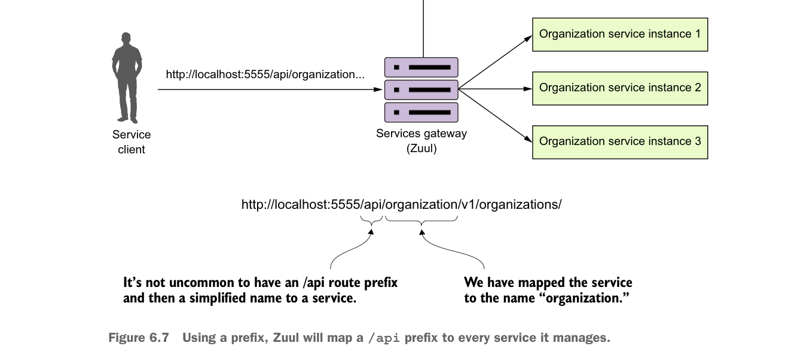

Dùng tiền tố, Zuul sẽ ánh xạ tiền tố
/api tới mọi dịch vụ mà nó quản lý.điều này bằng cách dùng thuộc tính prefix trong cấu hình Zuul. Hình 6.7 mô tả khái niệm về tiền tố ánh xạ này sẽ trông như thế nào.
Trong listing sau đây, chúng ta sẽ thấy cách thiết lập các route cụ thể tới các dịch vụ organization và Licensing riêng lẻ, loại trừ tất cả các dịch vụ do eureka tạo ra, và thêm tiền tố /api cho các dịch vụ của bạn.
Thiết lập các route tùy chỉnh với tiền tố
Tất cả các dịch vụ đã định nghĩa sẽ được thêm tiền tố /api.
zuul:
ignored-services: '*'
prefix: /api
routes:
organizationservice: /organization/**
licensingservice: /licensing/**Thuộc tính ignored-services được đặt thành * để loại trừ việc đăng ký tất cả các route dựa trên Eureka service ID.
organizationservice và licensingservice của bạn được ánh xạ lần lượt tới các endpoint organization và licensing.